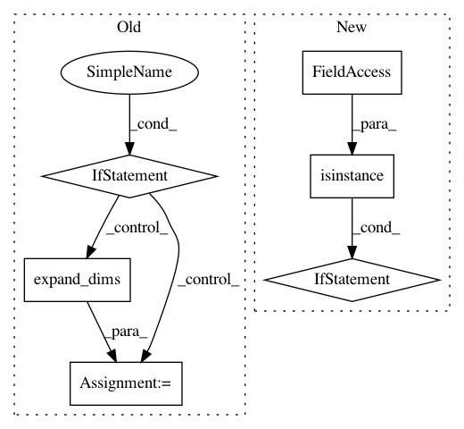

1a2462f18707e04f294224053473668820111cf5,PyPi/approximators/regressor.py,Regressor,fit,#Regressor#Any#Any#,24
Before Change
y (np.array): target;
fit_params (dict): other parameters.
if x.ndim == 1:
x = np.expand_dims(x, axis=0)
elif x.ndim > 2:
raise ValueError("Training set dimension not suitable for the "
"regressor.")
if self.features:
x = self.features.fit_transform(x)
if self.input_scaled:
After Change
x = np.concatenate((x[0], x[1]), axis=1)
if isinstance(x, list):
if self.features:
x[0] = self.features.fit_transform(x[0])
if self.input_scaled:
self.pre_x = preprocessing.StandardScaler()
x[0] = self.pre_x.fit_transform(x[0])
else:
if self.features:
x = self.features.fit_transform(x)
if self.input_scaled:
self.pre_x = preprocessing.StandardScaler()
x = self.pre_x.fit_transform(x)
if self.output_scaled:
self.pre_y = preprocessing.StandardScaler()
y = self.pre_y.fit_transform(y.reshape(-1, 1))
In pattern: SUPERPATTERN
Frequency: 3
Non-data size: 6
Instances
Project Name: AIRLab-POLIMI/mushroom
Commit Name: 1a2462f18707e04f294224053473668820111cf5
Time: 2017-07-23
Author: carlo.deramo@gmail.com
File Name: PyPi/approximators/regressor.py
Class Name: Regressor
Method Name: fit
Project Name: AIRLab-POLIMI/mushroom
Commit Name: 1a2462f18707e04f294224053473668820111cf5
Time: 2017-07-23
Author: carlo.deramo@gmail.com
File Name: PyPi/approximators/regressor.py
Class Name: Regressor
Method Name: predict
Project Name: ray-project/ray
Commit Name: 80d314ae5eaadc88061a62c827e1b8670098c1ab
Time: 2020-03-12
Author: sven@anyscale.io
File Name: rllib/utils/exploration/random.py
Class Name: Random
Method Name: get_tf_exploration_action_op